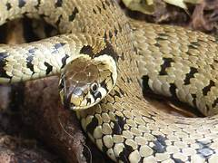
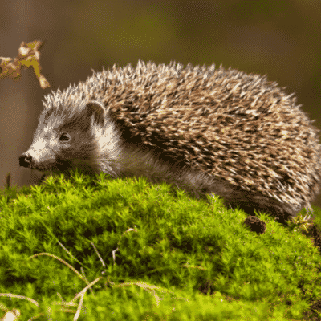
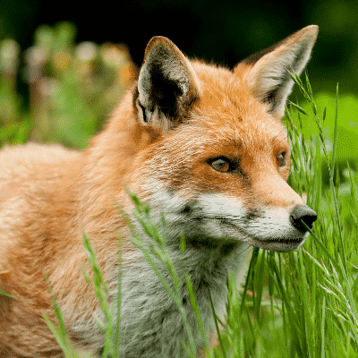
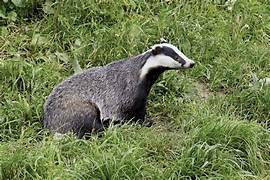
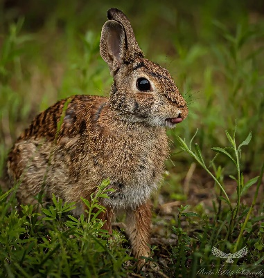
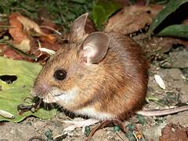
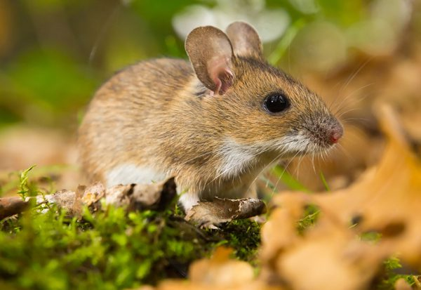
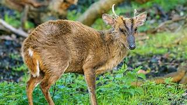
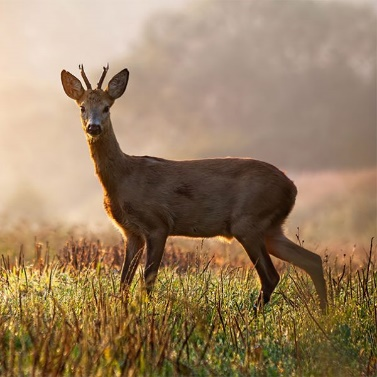
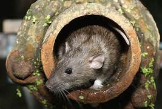

Mammals, Reptiles & Wildlife Tracks
Many mammals come out at dawn or dusk when the Commons are quiet. Look for footprints in soft mud, nibbled pinecones, molehills, or sunbathing reptiles!
Secretive Wildlife of the Commons

Harmless olive-green snake with a yellow-and-black collar; basks near damp hollows.

Prickly nighttime sniffer rustling under bramble patches and compost leaves.

Bushy white-tipped tail; trots quietly along gorse edges at twilight.

Bold black and white striped face; look for snuffle holes where badgers dig for worms!

Acrobatic climber scampering up oak branches and burying sweet chestnuts.

White bobtail flashing as it darts into sandy burrows beneath gorse scrub.

Huge dark eyes and big ears; leaps like a tiny kangaroo across the forest floor.

Larger woodland mouse with a distinctive yellowish band of fur across its neck.

Small dog-sized deer that barks like a terrier when startled in thick bracken.

Graceful native deer with long slender legs; grazes in secluded dawn clearings.

Rarely seen above ground, but look for fresh domes of dark soil (molehills)!

Thick scaly tail; excellent swimmer living near stone culverts and water edges.
Did you find animal tracks or droppings?
Draw the shape of the footprint (e.g. deer slot, fox paw, or badger claw) in the box below: